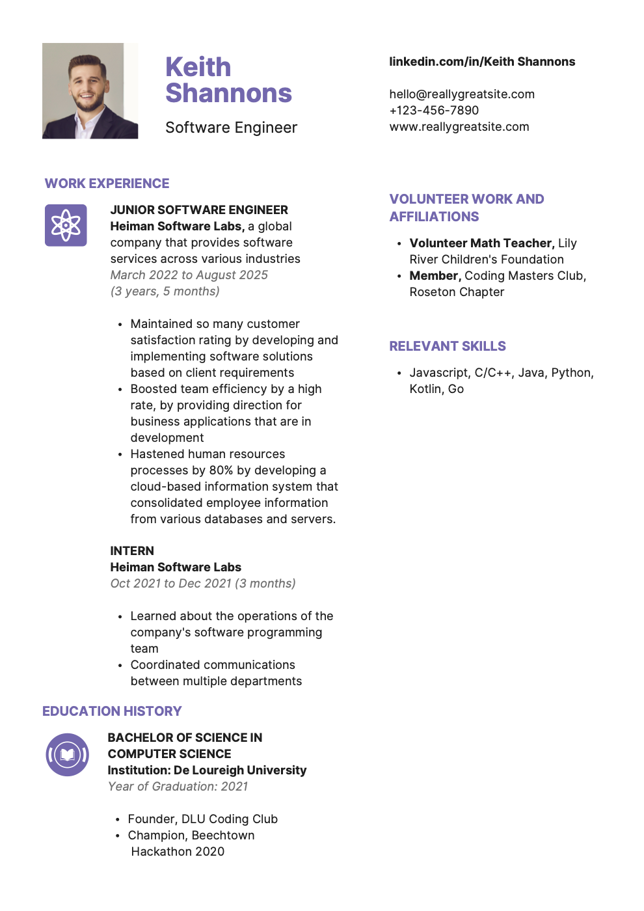
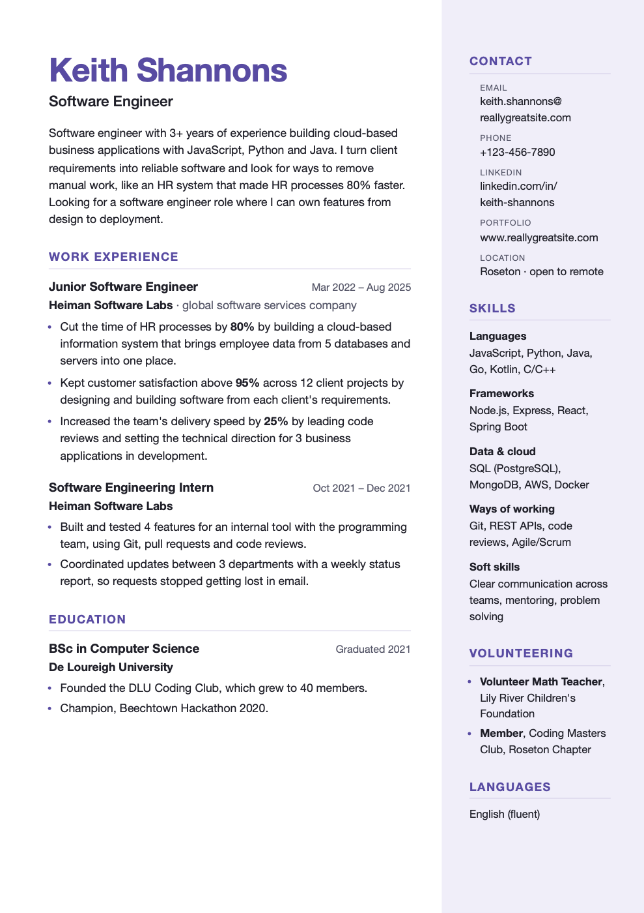

GoMyCode checkpoint · Career Strategies and Soft Skills · CV of “Keith Shannons”, Software Engineer · by Chimaroke Amadi
The CV looks nice at first: clean colours, clear sections, one page. But when I read it like a recruiter who has 10 seconds, I found 5 problems that would hurt Keith's chances. For each one I explain what is wrong, why it matters, and how I fixed it, with the text before and after. My corrected version is in Keith-Shannons-CV-corrected.pdf.
The original CV doesn't give the real numbers behind Keith's work, so the numbers in my version (95%, 12 projects, 25%…) are examples of the kind of figures he should write. On his real CV he would use his own real numbers. The 80% was already in the original.
Two of the three main bullet points use words like “so many” and “a high rate”. They don't tell the recruiter anything, because anyone can write them. The internship bullets are even weaker: “Learned about the operations…” describes what Keith was taught, not what he did. A good bullet shows a result, ideally with a number: what I did, how, and what it changed.
“Maintained so many customer satisfaction rating by developing and implementing software solutions based on client requirements”
“Boosted team efficiency by a high rate…”
“Learned about the operations of the company's software programming team”
“Kept customer satisfaction above 95% across 12 client projects by designing and building software from each client's requirements.”
“Increased the team's delivery speed by 25% by leading code reviews and setting the technical direction for 3 business applications in development.”
“Built and tested 4 features for an internal tool with the programming team, using Git, pull requests and code reviews.”
I also moved the strongest bullet (HR processes 80% faster) to the top, because recruiters read the first line the most.
Small errors make a CV look rushed, and for a software engineer, attention to detail is part of the job. I found:
Javascript · March 2022 to August 2025 (3 years, 5 months) · Oct 2021 to Dec 2021 (3 months) · Institution: De Loureigh University · Year of Graduation: 2021
JavaScript · Mar 2022 – Aug 2025 · Oct 2021 – Dec 2021 · De Loureigh University · Graduated 2021
One date style, placed on the right of every title.
The LinkedIn address “linkedin.com/in/Keith Shannons” has a space and capital letters. A web address can't have a space, so if a recruiter clicks it or types it, it won't work. The email starts with “hello@”, which looks like a general company inbox, not a person. There's also no city, so the recruiter doesn't know if Keith is local or open to remote work.
linkedin.com/in/Keith Shannons
hello@reallygreatsite.com
(no location)
linkedin.com/in/keith-shannons
keith.shannons@reallygreatsite.com
Roseton · open to remote
I grouped all the contact details in one “Contact” block with small labels, so they are easy to find.
The CV jumps straight from the name to the job list. A recruiter has to read everything to understand who Keith is and what job he wants. A short summary of 2–3 sentences at the top answers three questions: who I am, what I'm good at (with one proof), and what I'm looking for.
Keith Shannons
Software Engineer
(then directly “Work Experience”)
“Software engineer with 3+ years of experience building cloud-based business applications with JavaScript, Python and Java. I turn client requirements into reliable software and look for ways to remove manual work, like an HR system that made HR processes 80% faster. Looking for a software engineer role where I can own features from design to deployment.”
“Relevant skills” is only one line of 6 programming languages. It doesn't show any frameworks, databases, cloud or tools, but the job bullets talk about a cloud-based system and databases and servers. Many companies filter CVs with ATS keywords like “React”, “SQL”, “AWS” or “Git”, so this CV could be rejected before a person even reads it. There are also no soft skills, even though Keith coordinated departments and gave direction to a team.
Javascript, C/C++, Java, Python, Kotlin, Go
Languages: JavaScript, Python, Java, Go, Kotlin, C/C++
Frameworks: Node.js, Express, React, Spring Boot
Data & cloud: SQL (PostgreSQL), MongoDB, AWS, Docker
Ways of working: Git, REST APIs, code reviews, Agile/Scrum
Soft skills: clear communication across teams, mentoring, problem solving

